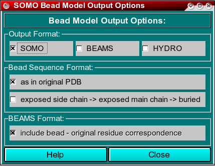

|
Manual
|
SOMO - Bead Model Output Format Options Module:

In this module, you can select the bead file output options. Currently, we are providing three
options, which can be independently activated (i.e., more than a single file type can be
simultaneously written). These options are:
-
SOMO. This is the new format developed for UltraScan-SOMO. In the first line are listed first the total beads number (n) and then the partial speficic volume vbar of the model. The properties of each bead are then listed in n successive lines of 8 columns each:
x, y, z coordinates, radius, mass, color coding, correspondence with original
PDB residue, bead ASA.
At the end of the data, the methods and parameters used to generate the bead model are listed. This
list will be displayed on the progress window of the main SOMO panel upon loading a SOMO-formatted
bead model file.
-
BEAMS. This is the originally developed old SOMO/BEAMS format. It is fully described in the original publications (Rai et al., Structure 13:723-734, 2005; Spotorno et al., Eur. J. Biophys. 25:373-384, 26:417, 1997).
-
HYDRO. This is the format utilized by Josè Garcìa de la Torre's program
Hydro. See here for more information.
In the Bead Sequence Format section, two mutually exclusive options are selectable,
valid for all three formats:
-
as in original PDB, which will list the beads in the same sequence as the original PDB
residues from which they were derived.
-
exposed dise-chain-->exposed main-chain-->buried, which will list the beads according to
the specified sequence.
The last option, For BEAMS format only: Include bead - original residue correspondence, is available only
for the old BEAMS format, in which the bead-residue correspondence could be optionally written. This correspondance is always enclosed in the new SOMO format, and
cannot be written in HYDRO formatted files.
www contact: Borries Demeler
This document is part of the UltraScan Software Documentation
distribution.
Copyright © notice.
The latest version of this document can always be found at:
http://www.ultrascan.uthscsa.edu
Last modified on August 26, 2008.